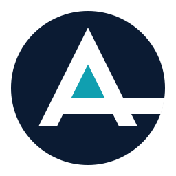
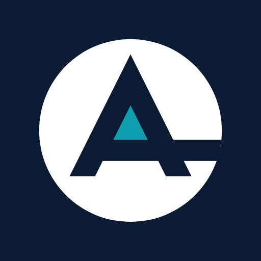
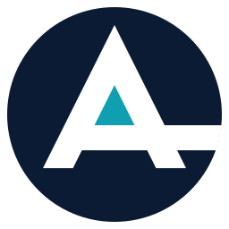

Alfa Calix Technologies · a technology brand operated by Alfa Calix Enterprise
The logo
The A of Alfa is carved out of a disc; its crossbar breaks out through the edge, opening the disc into the C of Calix. Alfa, held within Calix. The cyan core is what the company builds: the product at the heart of the institution.
Primary: horizontal, full colour, on white

Horizontal, dark version, on Calix Navy
Stacked

Symbol

Symbol, dark
One colour: navy (also black, white)

App icon (solid symbol on navy)
Clear space
Keep 1x clear on every side, where x is the height of the cyan core: about 22 % of the disc's diameter. The zone scales with the logo.
xxxx
Minimum sizes
Horizontal: 180 px wide on screen, 40 mm in print.
Stacked: 120 px wide, 28 mm.
Symbol: 24 px, 8 mm.
Symbol small cut: 16 px, 5 mm (favicons and tiny UI only).
Below the horizontal minimum, use the symbol on its own.
180 px24 px

16 px
Colour
Two colours carry the logo; white, slate and mist support it. CMYK values are calculated starting points: have the printer proof them and match Pantone spot colours from a physical swatch book.